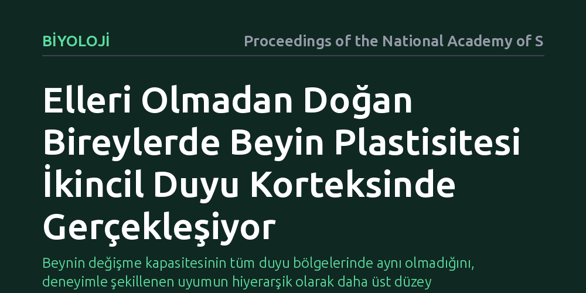

BIYOLOJI · Proceedings of the National Academy of Sciences · 2026-10-07
Araştırmacılar, doğuştan elleri olmayan bireylerde beynin duyusal bölgelerinin nasıl yeniden organize olduğunu inceledi. Bulgular, deneyime dayalı işlevsel esnekliğin birincil değil, daha üst düzey hiyerarşide yer alan ikincil somatosensoriyel kortekste gerçekleştiğini ortaya koyuyor.
Beynin değişme kapasitesinin tüm duyu bölgelerinde aynı olmadığını, deneyimle şekillenen uyumun hiyerarşik olarak daha üst düzey merkezlerde gerçekleştiğini gösteriyor.

İnsan beyninin yeni koşullara uyum sağlama ve işlevsel haritasını yeniden düzenleme yeteneği, sinirbilimin en temel araştırma konularından biridir. Bir uzvun eksikliği halinde, beyinde o uzva ayrılmış olan duyusal alanların sessiz mi kaldığı yoksa başka organlar tarafından devralınıp devralınmadığı uzun süredir tartışılıyor.
Doğuştan elleri bulunmayan bireyler, bu soruyu anlamak için benzersiz bir biyolojik model sunar. Bu bireyler günlük yaşam aktivitelerini ayakları, dudakları veya bacaklarıyla ustalıkla yerine getirir. Peki bu telafi edici yoğun kullanım, beynin dokunma duyusunu işleyen korteks haritasında tam olarak nerede ve nasıl bir dönüşüme yol açar?
Araştırmacılar, beyin esnekliğinin gelişigüzel mi yoksa belirli bir hiyerarşik kural çerçevesinde mi işlediğini belirlemek için doğuştan el eksikliği bulunan bireylerin beyinlerini inceledi. Çalışmada, dokunma duyusunu işleyen birincil ve ikincil korteks katmanları gelişmiş beyin görüntüleme teknikleriyle karşılaştırıldı.
Beynin duyusal mimarisinde birincil somatosensoriyel korteks doğrudan gelen ham uyarıları karşılarken, ikincil somatosensoriyel korteks bu verileri birleştirerek daha karmaşık algılar inşa eder. Araştırma ekibi, deneyime dayalı uzuv kullanımının bu iki basamak üzerindeki etkilerini ayrı ayrı haritalandırdı.
Elde edilen sonuçlar, beyindeki işlevsel esnekliğin katı bir hiyerarşik ilkeyi takip ettiğini gösterdi. Sanılanın aksine, birincil duyu korteksi erken dönemdeki temel mimarisini büyük ölçüde korurken, asıl işlevsel yeniden yapılanma ikincil somatosensoriyel kortekste meydana geliyor.
Bireylerin ayaklarını veya diğer uzuvlarını günlük hayatta yoğun biçimde kullanması, ikincil korteksteki temsil alanlarının genişlemesini ve yeniden düzenlenmesini sağlıyor. Makalenin ifade ettiği gibi, "kortikal plastisite hiyerarşik bir ilkeyi takip ediyor" ve deneyim, üst düzey entegrasyon merkezlerinde karşılık buluyor.
Bu bulgu, beynin plastisite potansiyelinin her korteks alanında aynı derecede geçerli olmadığını ortaya koyuyor. Deneyim ve öğrenme, beynin temel duyusal giriş kapılarını bütünüyle baştan yazmak yerine, bilgiyi anlamlandıran ve bütünleştiren üst katmanları dönüştürüyor.
Elde edilen bu ilke, gelecekte felç veya amputasyon sonrası uygulanacak nörorehabilitasyon protokolleri ve gelişmiş protez sistemleri için de yol göstericidir. Beynin yeni bir uzvu veya cihazı benimsemesini sağlamak için birincil duyu alanlarından ziyade ikincil duyusal işlem merkezlerine odaklanılması gerektiği anlaşılıyor.